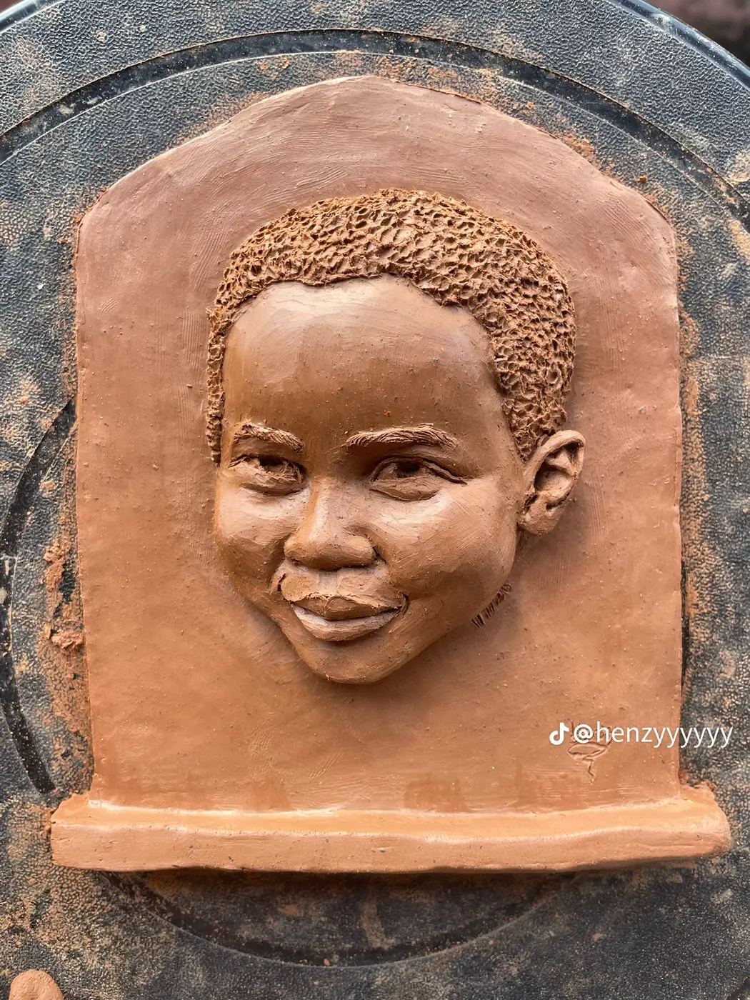
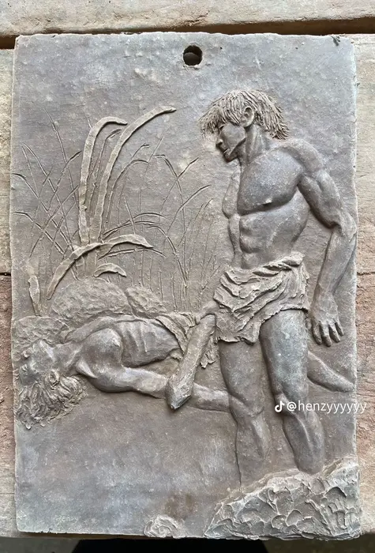
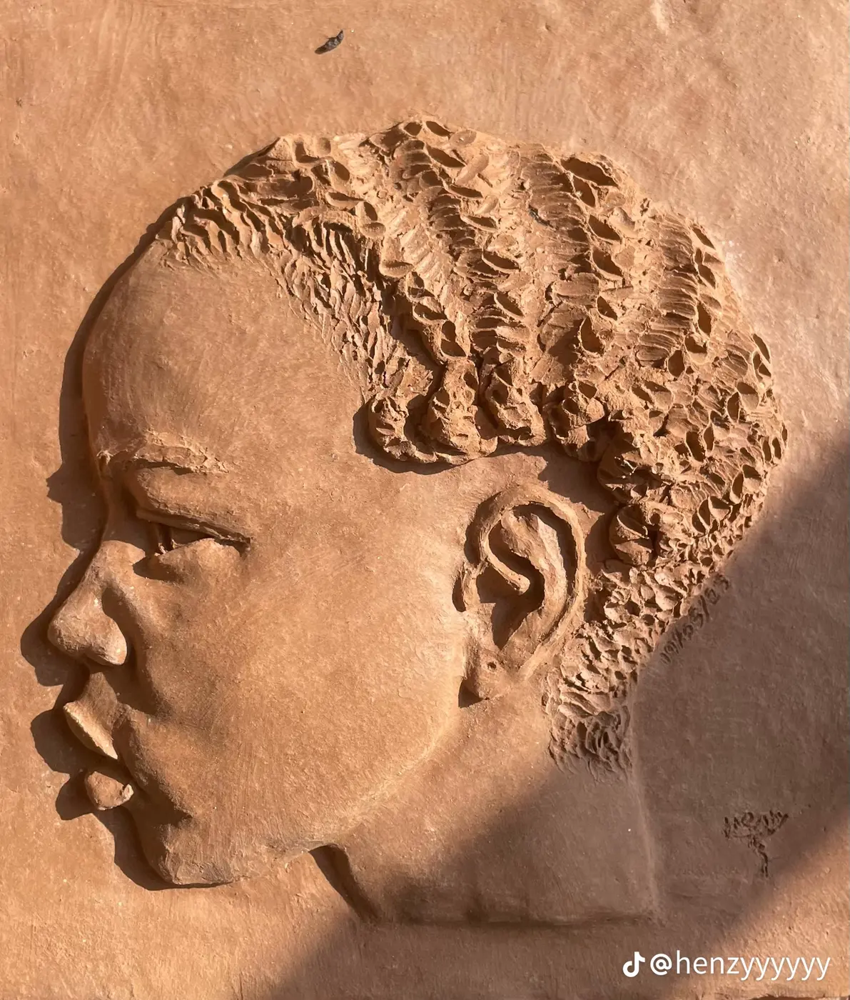

Sculpture · Relief · Portraiture
Shaped by hand,
fired in clay.
Boboarts is a sculpture studio making relief portraits, figures, animals and heritage pieces, each one shaped by hand from raw clay.



Selected works
The collection




In the studio
From reference
to relief
Every piece starts with a reference and a block of clay. Here are a few recent ones in progress.

About the studio
Clay that
remembers a face.
Boboarts began with a simple habit: sculpt every day and share the work. That practice has become a body of relief portraits, figurative panels and animal studies, all built by hand.
Read the story →